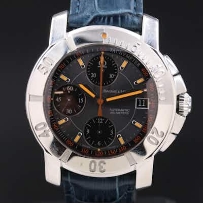

OUTPRICEDBaume & Mercier Capeland Chronograph Steel Automatic Watch 65405
Baume & Mercier Capeland Chronograph, ref. 65405, steel case, Swiss automatic movement, ta
0 min left
Current bid$750 · 20 bids
Est. value$728
Your max bid$444
All-in at max$546
Projected close$750
Margin at bid−$170
Details & price history →